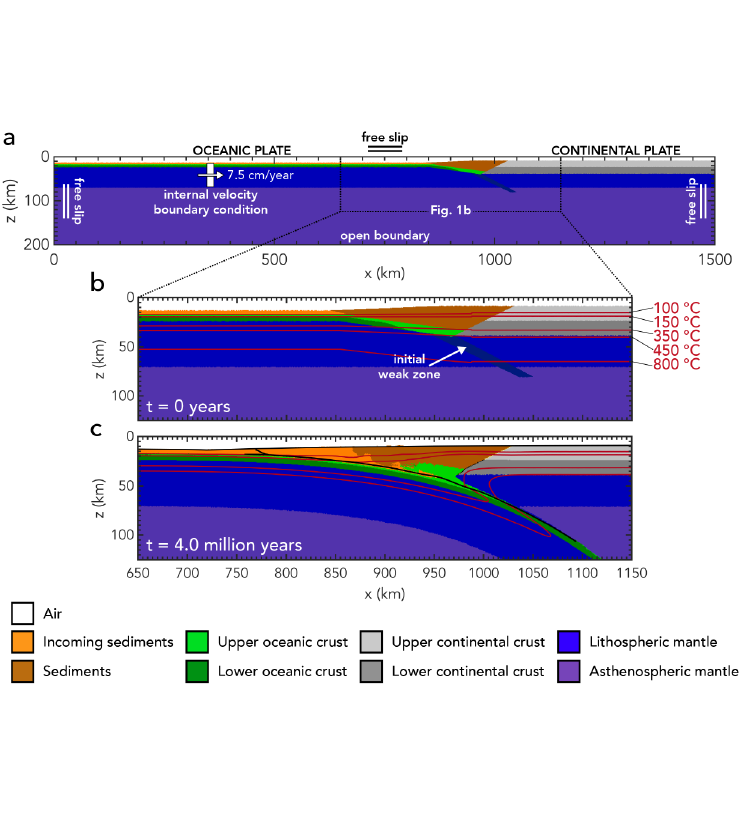
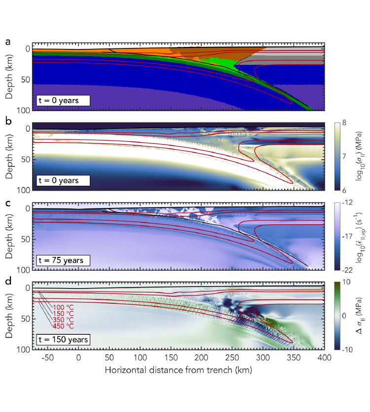
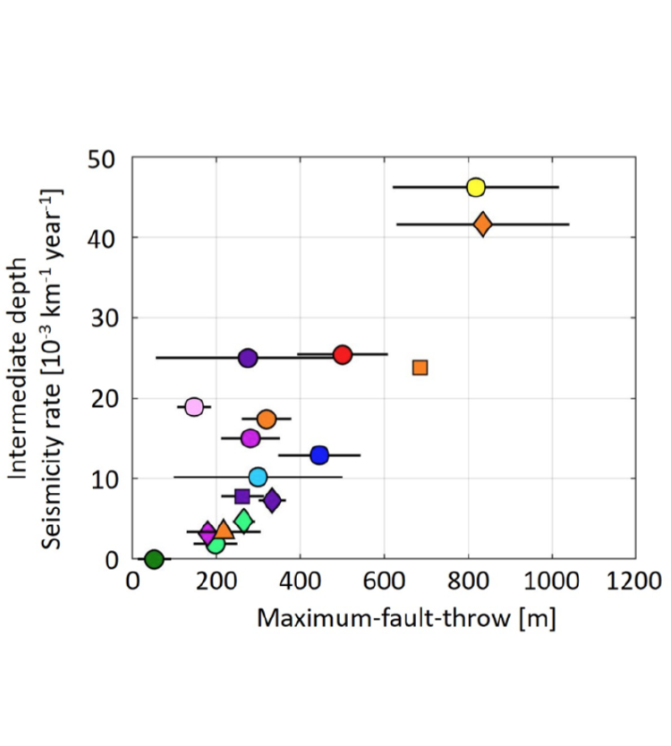

Research Projects (2019 - 2021)
[2014 - 2018] • [2019 - 2021] • [Current projects]
-
3D coupling of earthquakes and tsunamis
We use the output of a geodynamic seismic cycle model (Van Zelst et al., 2019 JGR) as input for a 3D dynamic rupture model and coupled 2D tsunami model to investigate how variations in hypocentre location in linked models impacts rupture dynamics, seafloor uplift, and tsunami generation, propagation, and inundation. Depending on hypocentral depth, we find localised supershear rupture due to large-scale fault topography. The results of these physics-based linked dynamic rupture and tsunami scenarios yield new insights in seismic and tsunami hazards. Published in Wirp et al. (2021, Frontiers in Earth Science).
-
Subduction dynamics and seismicity
We look into the effect of sediment subduction on subduction dynamics and the corresponding seismic signature with 2D seismo-thermo-mechanical models. We consider subduction with variable sediment thickness and density. We find that thick sediments on the downgoing plate lead to a slower subduction and a shallower dip, due to the decrease in slab pull and increase of stress along the interface associated with a bigger accretionary wedge. Our findings suggest that the effect of sediments might be not limited to the lubrication of the contact interface, but buoyancy and accretionary wedge size also play a role. Published in Brizzi et al. (2021, GRL).
-

Methods for earthquake - tsunami simulations
We develop a modelling framework that couples a geodynamic seismic cycle model to a dynamic rupture model, to a tsunami propagation and inundation model. We present three scenarios to demonstrate the flexibility and capabilities of linked modelling. Published in Madden et al. (2020, GJI).
-
Mega-earthquakes & sediment thickness
Brizzi et al., (Tectonophysics 2018) found that subduction mega-earthquakes favour long subduction zones with high sediment supply. They used multivariate statistics on a global subduction zone characteristics database. To further assess the correlation and possible causality between mega-earthquakes and sediment thickness at the trench, we develop numerical models for a parameter study into sediment thickness in subduction zones. We find that a thick sediment layer increases the seismogenic zone width, maximum earthquake magnitude, and the amount of splay faulting. Published in Brizzi et al. (2020, JGR: Solid Earth).
-

Modelling subduction and earthquake dynamics
We couple a geodynamic seismic cycle model to a dynamic rupture model to resolve subduction and earthquake dynamics across spatial and temporal scales. Both events are comparable in terms of nucleation and material-dependent stress drop, but not slip. Published in Van Zelst et al. (2019, JGR: Solid Earth).
-

September 28, 2018 Palu, Sulawesi event
We show that the earthquake displacements of the 2018 strike-slip earthquake in Palu, Sulawesi were critical to the ensuing tsunami by using coupled dynamic rupture and tsunami propagation and inundation models. Published in Ulrich et al. (2019, Pure and Applied Geophysics).
-

Intermediate-depth earthquakes & bending-related faults
Our global survey demonstrates a correlation between bending faults in the incoming plate and the seismicity rate of intermediate-depth earthquakes. We use fault throw as a proxy for overall fault damage and the ability of water to hydrate the incoming plate. Published in Boneh et al. (2019, GRL).